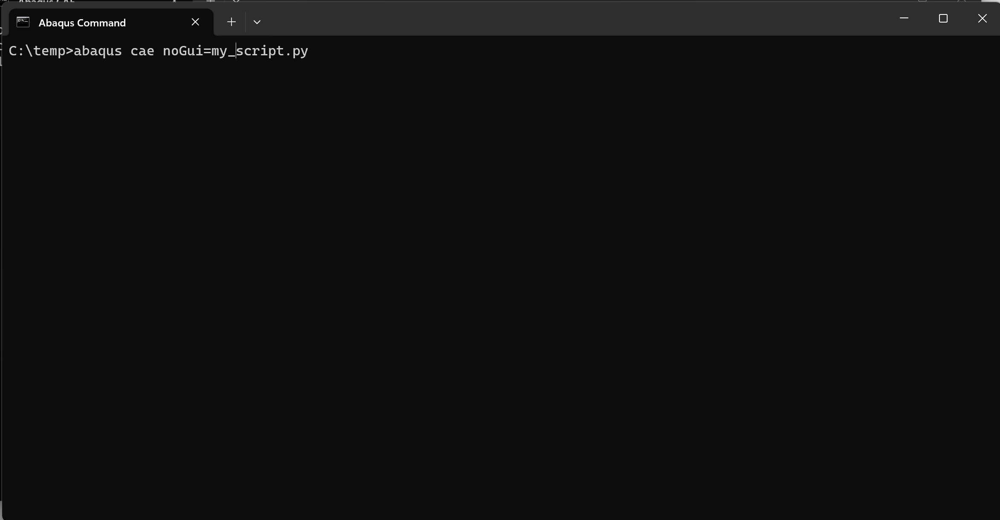
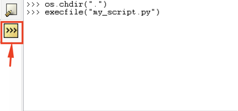
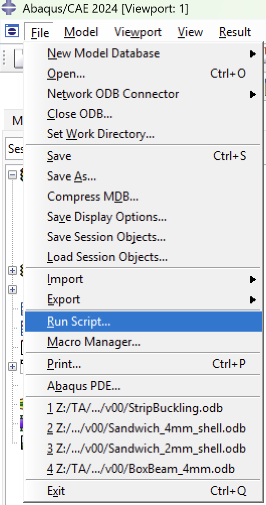

Running Python in Abaqus
What Python environment does Abaqus use?
Abaqus ships with its own embedded Python interpreter (2.7.x in older versions, 3.x in Abaqus 2024+). It is isolated from any system Python you have installed. Scripts run inside Abaqus have access to the abaqus, abaqusConstants, odbAccess, and visualization modules, which are not available outside of it. This means, python scripts meant for abaqus, needs to be ran inside Abaqus, through the Abaqus CAE or Abaqus Command.
How do I run a script from the Abaqus command line?
Use the abaqus python command in your terminal:
abaqus python noGui=my_script.py

Make sure you change your directory to be where the script is saved, or pipe in the fixed path to your python script file. Change the directory in the terminal using a raw string!
cd r"path_to_script"
How do I run a script inside the Abaqus/CAE GUI?
| Scripting Console | Run Script |
|---|---|
 |
 |
Go to File → Run Script… and select your .py file. Alternatively, use the built-in Python scripting console at the bottom of the CAE window using execfile("my_script.py")
In the scripting console, you can change the working directory by using the os.chdir(r"path") function. Then use execfile(). Using r" " to denote a raw string!
What is the Abaqus Scripting Interface (ASI)?
The ASI is the Python API that lets you control CAE programmatically — creating parts, materials, steps, loads, meshes, and jobs. The entry point is the mdb (Model Database) object:
import abaqus
mdb.models['Model-1'].parts['Part-1'].seedPart(size=5.0)
How do I post-process results from an ODB file?
Use the odbAccess module.
from odbAccess import openOdb
odb = openOdb('job.odb')
step = odb.steps['Step-1']
frame = step.frames[-1]
field = frame.fieldOutputs['S']
print(field.values[0].mises)
odb.close()
Where can I find Abaqus scripting documentation?
The official reference is the Abaqus Scripting User's Guide and Abaqus Scripting Reference Guide, available in the Dassault Systèmes documentation portal. The guides include a full API reference for every mdb, odb, and session object.
What is the .rpy file?
A running Python log of everything you do in a CAE session. Abaqus writes it live to your working directory as abaqus.rpy. It resets every new session.
What is the .jnl file?
A Python log tied to a saved .cae file. It contains only the commands needed to reconstruct that saved model — cleaner and more stable than the .rpy.
Which one should I use for coding?
Both, at different stages:
Use .rpy to capture API calls while you work — do the thing manually in CAE, then read the file to see exactly what Python command it used. Use .jnl to audit a saved model — if something is broken, the journal shows the precise sequence that built it.
How do I turn them into a usable script?
Copy the relevant lines into a new .py file and clean it up. The files are noisy (lots of display/view commands) but the model-building calls — mdb, Part, Step, Load, etc. — are all there and valid Python.
like...
mdb.models['Model-1'].parts['Part-1'].BaseSolidExtrude(sketch=..., depth=10.0)
mdb.models['Model-1'].rootAssembly.Instance(name='Part-1-1', ...)